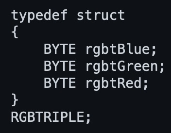
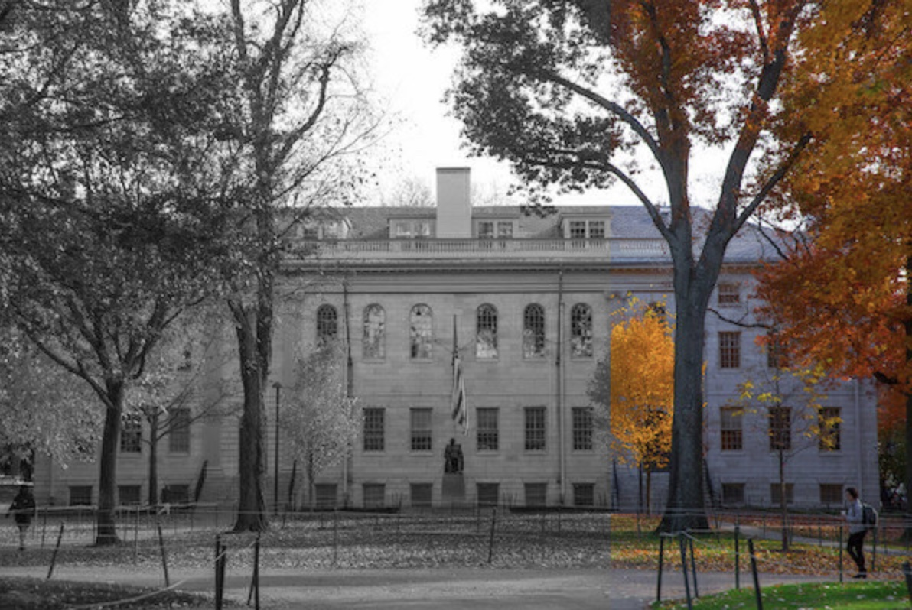
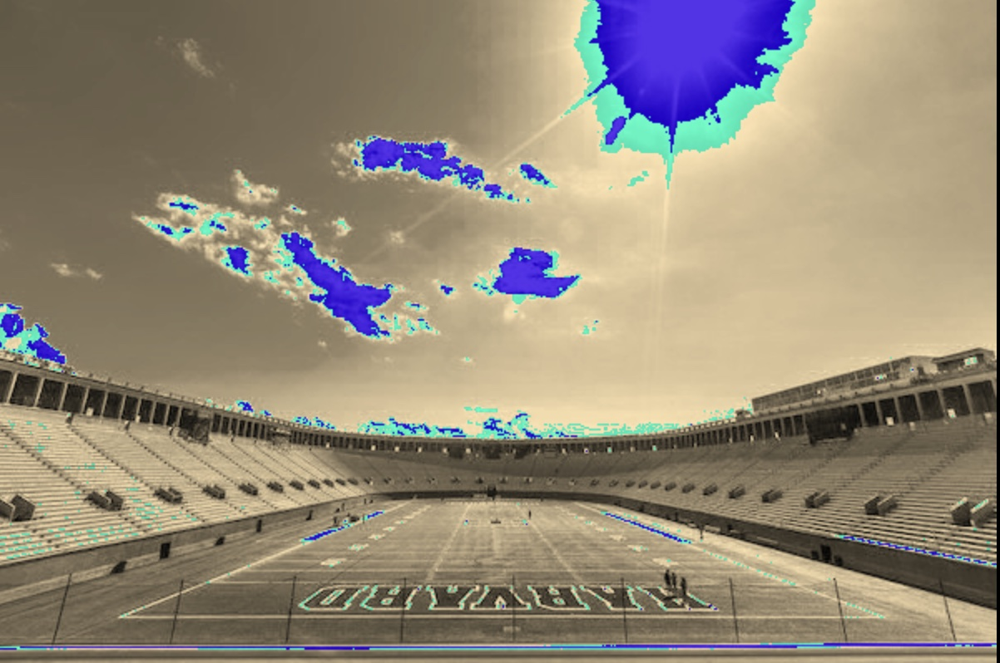
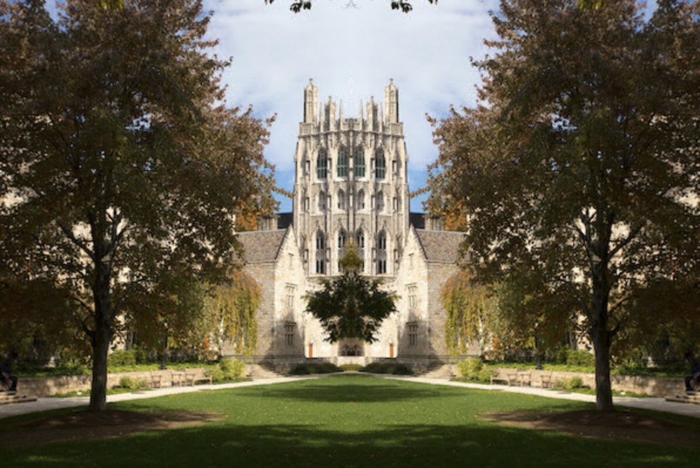

Thursday, 16th of Febuary
COMMITTING TO MEMORY
Labs
Smiley
For this first lab exercise we needed to transform a smiley face represented by black and white pixels by changing the black pixels into a new colour.
The majority of the code was already provided for us. All we needed to do was provide the code for the colourise function inside of a helpers.c file, which was called in the main function of the colourise file. To link the helpers function to the main function in colourise file, the colourise function was initialised in the beginning of the helpers file, instead of the usual main. These two c files were then linked by the makefile also provided to us already.
Once I wrapped my head around this new approach, I set about planning my approach. I realised that the three input parapets of the colourise function gave us hint on how to approach lab. We were given the image height width and the array of pixels. Immediately my mind want to a solution that involved for loops which iterated through values up to the height and width, much like our solutions to previous tasks like the Mario Pyramid. By this point, such a solution comes easily.
The difficulty I faced in this lab was identifying how to represent the 24-bit colour of each pixel. I overlooked the information in the Lab background which explained to us how the RGBTriple structure was made.

I knew that I needed to use a for loop, and for each pixel which was found to be black, using an if statement to change it into the colour I desired. My first attempt at representing the pixels was using (0,0,0). I then tried to use a hexadecimal system, binding all 3 bytes together (0x000000). After several errors, searching online for answers, I reread the lab background and found the RGBTRIPLE structure which put my on the right track.
Using the hint which told me that each individual colour of a pixel could be called by pixel.rgbtBlue, I had both the correct strategy and syntax needed to successfully complete the lab.
Using the hint of saving each pixel as image[i][j] I was able to work through the loop and change every black pixel to my desired colour. First time round I did not succeed in changing the colour. However, once I realised I was changing the new RGBTriple value called pixel, and not returning that value back into the image array, I was able to submit a successful solution.
Volume
I opted to complete the second lab 'Volume' because I found the first challenging. 'Volume' required us to write code which manipulated the volume of WAV files. I hadn't written file manipulation functions in Smiley.
Although we only needed to write nine lines of code, the lab tested our understanding of bits, bytes, data type sizes, and memory, which we learned in the lecture as well as our ability to interpret information from documentation. To understand file manipulation functions better, I found the supplemental file pointers short useful.
I learned that we use a scaling factor of 'r' to open a file for reading and 'w' to open a file for writing. I learned that to copy data from one file to another, we first need to read the data into memory and then write it to the new file. We also need to specify the data size and number of data in two of the input parameters when using 'fread' and 'fwrite'. For example, if we have an array of 10 integers, we can call 'fread' with the size-related parameters of 'sizeof(int)', which equals 4 bytes, and to read 10 piece of data, reading 40 bytes in total.
I copied this example for my solution by calling for fread to read 44 pieces of 'sizeof(uint8_t)', which equals 1 byte, to read the header of 44 bytes, but I realised I also could have read 44 bytes of data just once. To iterate through each sample after the header until the end of the file, I used a while loop. The sample code for 'fwrite' helped me write the loop, and I learned that 'fread' returns a positive integer if it reads a value and 0 if it does not. This 0 is equivalent to the boolean expression of false, which causes the while loop to exit when 'fread' reaches the end of the file (EOF).
Problem Sets
Filter
In my first attempt at running the grayscale function, I encountered an error where the full image was not being converted. After some debugging, I discovered I was using the height variable for both loops, and changing the second loop to use "width" solved the issue.

Although my code appeared to be working, the end result was not exactly as intended by cs50. I realised this was due to an issue with my average calculation and rounding. I needed to use the round function from the math.h library to round the result of the three values divided by 3.0, ensuring my result was a rounded floating point number, rather than treating the values as integers, which always round down. I had the same issue with the sepia filter below, and although this error was unnoticeable in these cases, it was imprecise.
While working on the sepia function, I encountered difficulty filtering white pixels. I realised that I was receiving values higher than 255, and despite my efforts, I was not capping these values at 255. I attempted to fix this with an if statement, but ultimately found that the problem was caused by not treating the results as integers after the sepia calculations. I suspect the calculations were returning float or byte values, and as such, when I tried to calculate if values were above the integer 255, I was unable to compare the two data types. Initialising the sepia filtering result into a new variable which was set to "int," for each pixel colour allowed me to compare whether they were above 255 and cap them at the maximum value if they were.

The reflect function was straightforward for me. I used a for loop where the lowest value for each row (equivalent to i) was equal to the maximum value for the width minus i. I started i at zero, and this reflected all the values in the row. The first issue I had was when working on the original image files, where I would reflect the values I had already copied over in the first half. To solve this, I created a new array of the same size and ran a second for loop, which loaded this new array back into the image array by starting from zero for both height and width and iterating up one until the maximum value.

However, I soon discovered that my solution was not complete. With my above solution, I was losing the end pixels, because the end pixel that was being loaded into the first was from the iteration of [i][height], which is not a position in the array. The array starts at zero, so the end pixel is for each row is [height - 1]. By subtracting one from my equation for the lowest value (width - 1 - i), I was able to load the correct pixel into the first position in each row.
The final problem in the first problem set was to blur an image by taking the pixel values surrounding a pixel, finding an average for each colour of the neighbouring pixels plus the values of the pixel itself, and replacing each of the pixel's three colours with these averages. The tricky part was that pixels on the edges or in the corners had fewer neighbours than those in the middle of the image. To tackle this, I used the concept from the reflection function of creating a temporary array to store the altered values, as I needed to calculate the averages of the original image. Otherwise, my averages would have included previously blurred pixels, and the blurring would have been too severe.
I found it challenging to determine how to specify whether a pixel existed or not. To solve this, I added two if statements inside the two for loops. Although my logic was correct, I made a few small errors that led to inaccurate results. My biggest failure was not realising I did not need to add the pixel's value myself to the average calculation, as this was already taken care of by the [0][0] iteration in the for loops.
Recover
In the final problem set, we were tasked with scanning through an image of a corrupted memory card to recover JPEG images. We were given several key pieces of information, including that the first three bytes of a JPEG are 0xff, 0xd8, 0xff; the pattern for the fourth byte is 0xe?; digital cameras store images one immediately after the previous photo; digital cameras typically use the FAT system, whose block size is 512 bytes; and if the end of a JPEG does not fall on the 512th byte, the entire block is still included but the remainder is filled with slack space. This slack space is filled with zeroes, which have no impact on the JPEGs we are trying to recover.
When I started working on the problem set, I made an error in interpreting the first input parameter required for the "fread" function when reading a block of 512 bytes from the corrupted file into the buffer. In the example, we were told that the first parameter needed to be the data destination (buffer), but I initially believed it to mean the data source (raw_file). As a result, I switched the parameters, which led to errors in my code.
However, the core of my code was sound, and my initial attempt at running the program resulted in several JPEGs being created with correct filenames and the program terminating at the end of the corrupted file.
I discovered two errors in my code. First, I had not instructed the program to continue writing blocks to the open JPEG file if the starting bytes were not recognised in the buffer. Second, I had not set up the program to close the previous JPEG file and open a new file if the starting bytes were recognised again in the buffer.
To fix these errors, I needed access to the "img" variable, which I used to store each open JPEG. Initially, this variable was initialised in the first "if" statement and was only accessible within the surrounding curly brackets. To grant access to this file so I could continue writing subsequent blocks or close the current JPEG to open a new one, I needed to initialise the "img" file outside of the if statement.
The final issue I encountered was that the JPEGs I was recovering were incomplete, and I was only receiving half the desired number of images. I realised that each time "fread" is called, it starts from where the last “fread” ended. I then remembered that I was calling fread from the corrupted file into the buffer twice, even though the first time was as a part of the while loop which checked if 512 bytes remained. It still loaded the buffer with the required data, and I did not need to call fread a second time within that while loop. As a result, I had been reading two whole blocks for each one I wrote into each image file and missing out on half of the necessary blocks. This accounts for why I was only receiving half the images and why, by the end of the corrupted file, I had only recovered half of the expected number of JPEGs.